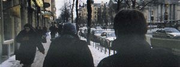
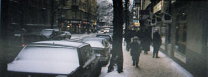
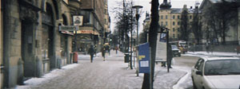

The
Situationist City - Recombinant City Walks
The Situationist City - Recombinant City Walks

"I
have always enjoyed walking in towns, well, I don't like crowded places,
but more desolate spaces, city space with scarce human population. It
feels important to walk around, without a specific goal, and without being
overtly anal about seeing *everything*. The act of exploring."
Idoren.
It's perhaps too easy to see the similarities of this kind of exploration
to a general "alternative" outlook on life. We are adrift in
a sea of meaninglessness, and this state of things is interrupted only
by various emotional experiences that only happen occasionally; when one
is reading a book, watching a good film, or meeting someone new and interesting.
To not be unhappy, we need our information fix, or go cold turkey.
The major trick here is to make the mundane interesting. It doesn't *have*
to be interesting, it's enough that it seems interesting, and if you're
not to queasy, and begin looking under the slacky facade, you can well
learn how to pull a trick that was developed by an old-school caste of
neuronauts known as the Situationist. They perfected a script, a multithreaded,
interactive storyline for instant city exploration. It can turn any city
into a place for futant desire, you've just gotta stash up on the right
illegal memes needed to turn this activity into a success.

The Situationists referred to pointless city walks as "drifts".
They were obsessed by how maps (like city maps and subway charts) relate
to how cities are experienced by human minds. Is it possible to make maps
that can convey the experience of the city, in a more straightforward
manner than the standard projection logic used by mapmakers? They weren't
very successful in creating their maps, although they sure are thinkworthy
art objects, they aren't very useful for describing the experience of
the "drift". The situationists knew this for sure - they were
trying to keep their knowledge obscure as to keep it from being exploited
by the media / spectacle. In some sense that has happened too, situationist
lore has been used by the spectacle. Now things have deveoped further:
we have the advantage to be able to steal back from the media, to take
their advertisement techniques of visualized leisure back to develop a
storyboard/filmatic approach for describing various mindframes that the
drift can take place in.

The drift is a voyeuristic pleasure trip. Although drifting assaults
all one's senses at once, it's foremost a visual reverie. By walking,
and being mobile, one reassures an identity as casual observer, not connected
to the scenery passing by. This unconnectedness is a source of pleasure.
The point is to dissociate oneself totally, to observe the surroundings
from a detached point of view and laugh at it, or derive pleasure in some
other more sinister way. Most accounts about "taoist" or "pantheist"
etc thought structures stress the process of "becoming one with nature",
but Powerbase is more concerned with becoming totally disconnected - becoming
The Other, relative to the rest of the world.
The situationist drift is without point, it's more like experiencing
the world as a mass of free-floating points, while at the same time experiencing
the city as a linear story, a walk that has a beginning and an end. The
linear expression comes from the fact that one is walking. The travelling
motion through the city is timeless. The space between spaces is emphasized.
The experience is also about scrambling, re-coding and de-coding the world
into and from different fragments. To be distilled as mindframes, to be
used at leisure.
The situationist drift is without purpose. Even though it at the same
time is a quest for pleasure, it's not possible to have that goal active
in your mind when you are drifting, because then you will inevitably fall
into a state of stressed out oblivion and worry about everything. The
trick is to just be happy that you are experiencing something out-of-the
ordinary and fulfilling your destiny as mean-assed happy mutant, this
way you'll end up in a positive feedback loop of happiness, not too bad
for a day walking around aimlessly in the city streets.
|